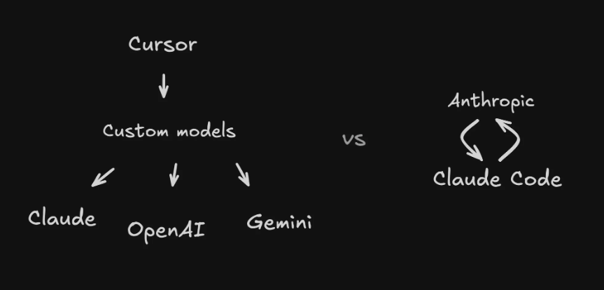
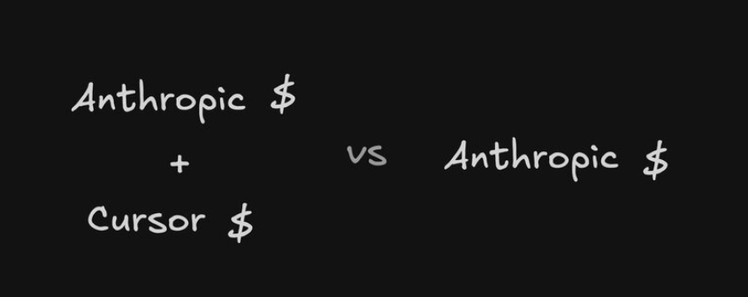

我使用 Cursor 已经一年多了,算是 Cursor 的高级用户。我对 Cursor 的每一项高级功能和代理模式的最佳实践都进行了深入研究。
但几个星期以来,我完全沉浸在 Claude Code 的世界里。说实话,我已经回不去了。
这不是标题党——而是我从一个"重度 Cursor 用户"转为"全面 Claude Code 拥护者"的真实心路历程。
从"辅助工具"到"主战场"
以前的工作流程是这样的:我在主编辑器里写代码,把 Claude 当作一个小侧边栏,需要的时候才打开。
现在完全反过来了——我默认先打开 Claude Code,只有在查看代码更改的时候才会瞥一眼 IDE。它已经成了我的主要界面,而不是辅助界面了。
这个转变并非偶然。Claude Code 在处理大型代码库时展现出的能力,让我震惊。
我们在 Builder.io 有一个 React 组件,它长达 18,000 行代码。除了 Claude Code 之外,没有任何 AI 代理能够成功更新这个文件。
使用 Cursor 时,我仍然遇到很多小问题。它难以解决补丁问题,经常需要重写文件,而且更新超大文件时非常吃力。但 Claude Code 在处理复杂任务方面表现出色,我发现它极少卡住。
经济学视角:为什么"直营"总是更好?
从经济学角度来看,这个选择其实非常合理。
想想看:Cursor 构建了一个支持多种模型的通用智能体。这需要一整个团队,他们不仅要训练定制模型,还要在向 Anthropic 支付底层模型费用之外,还要盈利。

而 Anthropic 开发出了最优秀的编码模型,Claude Code 则是运用这些模型的最佳平台。当 Claude Code 遇到挑战时,他们会着手改进模型。
他们完全了解模型的工作原理、训练方法以及如何深入使用它。他们不断训练模型,使其能够很好地满足 Claude Code 的需求。

这就像直接从制造商那里购买,而不是通过经销商。当然更好。
Anthropic 可以让你最大限度地使用像 Opus 这样的模型,而不会像 Cursor 那样面临必须盈利的情况。
那些"反直觉"的设计
一开始,我对终端用户界面(TUI)也很怀疑。用终端界面来编辑基于聊天功能的代码?听起来像是倒退。
不过 Anthropic 做得还不错。你可以轻松地给文件添加 @ 标签,使用斜杠命令(这很实用),还可以精确选择要包含的上下文。
但也有一些奇怪的设计,需要时间适应:
• Shift+Enter 默认情况下不能换行。需要告诉 Claude 帮你设置一下终端,`/terminal-setup` 他就能帮你解决这个问题。
• 拖文件:正常情况下,将文件拖入 Claude 会像在 Cursor 或 VS Code 中一样在新标签页中打开它们。按住 Shift 键拖动文件,即可在 Claude 中正确引用它们。
• 粘贴图片:不能用 Command+V,要用 Control+V。
• 阻止 Claude:不是按 Control+C(那样只会完全退出)。要真正阻止 Claude,请使用 Esc 键。
特别一点，关于plan计划模式，
windous是ait加上两次m，不是其他博主说的shift+tab，不知道为什么没人讲过，真奇怪。
这些设计初看很反直觉,但用久了你会发现,它们都有各自的逻辑。
最让我上瘾的功能
我最离不开的一个功能是:消息队列。
你可以输入多个提示信息,Claude 会智能地逐一处理。我以前的做法是建一个记事本,开始草拟我想做的其他提示。然后,当我看到一个提示完成时,我就粘贴下一个提示并按下回车键。
现在我把所有信息都排队:"添加更多评论"、"实际上还有……"、"还有……"。Claude 非常智能,它知道什么时候应该执行这些操作。如果它需要你的反馈,就不会自动执行排队的消息。
你可以提前做好很多工作安排,然后去做其他事,很多情况下,回来后你会发现大量工作已经高效完成。
价格与价值的真相
我每月支付 100 美元,购买的是最高级别的套餐。
如果你认为一个才华横溢、24 小时不间断工作的程序员不值 100 美元/月,那你应该好好想想你自己的时间成本是多少。
看看世界各地工程师每小时的成本,无论你放眼全球,都比这高出几个数量级。任何一位经理只要算一下这笔账,就会发现即使是最高价位,也是绝对值得的。
这不是工具的成本——这是你时间的投资回报率。
定制功能:让它更懂你
定制功能非常强大。
Claude Code 支持自定义钩子、斜杠命令和项目特定配置。最棒的是什么？你可以让 Claude 为你构建这些功能。
我请 Claude 添加一些默认的钩子、命令和设置。它分析了我的项目，并创建了一个我可以轻松编辑的设置文件，其中包含一些值得注意的亮点：
它添加了一个`CLAUDE.md`文件，其中包含项目概览和一些它应该知道的关键命令。这样就避免了它每次都要手动查找并扫描代码库以查找“是否存在构建命令或代码检查命令？”。它始终能够感知到这些信息。
它添加了一些钩子，用于在接受编辑之前运行哪些代码，例如在特定文件上运行 Prettier，或者在编辑之后运行哪些代码，例如在特定文件上编写类型检查，以确保它只接受良好且正确的文件。
您可以通过项目目录中的文件创建自己的钩子`.claude/settings.json`，配置方式如下：
{"hooks": [{"matcher": "Edit|Write","hooks": [{"type": "command","command": "prettier --write \"$CLAUDE_FILE_PATHS\""}]},{"matcher": "Edit","hooks": [{"type": "command","command": "if [[ \"$CLAUDE_FILE_PATHS\" =~ \\.(ts|tsx)$ ]]; then npx tsc --noEmit --skipLibCheck \"$CLAUDE_FILE_PATHS\" || echo '⚠️ TypeScript errors detected - please review'; fi"}]}]}
Claude Code hooks 是在 Claude Code 生命周期中的各个点执行的 shell 命令，例如 PreToolUse（工具执行之前）、PostToolUse（工具完成之后）、Notification（Claude 发送通知时）和 Stop（Claude 完成响应时）。
钩子通过 stdin 接收包含会话信息的 JSON 数据，并且可以通过退出代码或 JSON 输出控制执行流程。
例如，您可以创建钩子，以便在文件修改后自动格式化代码、在允许编辑前验证输入或发送自定义通知。匹配器字段支持精确字符串（例如“Edit”）或正则表达式模式（例如“Edit|Write”或“Notebook.*”），用于指定哪些工具会触发钩子。
您还可以使用 Claude Code 中的交互式`/hooks`命令通过菜单界面配置钩子，这通常比直接编辑 JSON 更容易。
### 创建自定义斜杠命令
您还可以轻松添加自定义斜杠命令。要添加命令，只需创建一个`.claude/commands`文件夹，并将命令名称作为文件添加到该文件夹中，并添加一个`.md`扩展名。您只需用自然语言编写这些命令，即可使用该`$ARGUMENTS`字符串将参数传递到提示符中。
例如，如果我想输出一个测试，我可以创建`.claude/commands/test.md`：
**请为以下内容创建全面的测试：$ARGUMENTS****测试要求：**1. 使用 **Jest** 和 **React Testing Library** 进行测试2. 将测试文件放置在 `__tests__` 目录下3. 对 **Firebase/Firestore** 依赖进行 Mock 模拟4. 测试所有核心功能5. 覆盖边界场景与异常场景6. 测试 **MobX** 可观察状态（observable state）的变更逻辑7. 验证计算属性（computed values）是否正确更新8. 测试用户交互行为9. 在 `afterEach` 钩子中确保完成测试环境的清理工作10. 目标是实现高代码覆盖率
然后`/test MyButton`它就能完全按照你的预期运行。你甚至可以创建子文件夹——我们可以像`/builder/plugin`这样访问它们，将`builder`文件夹与`plugin.md`文件匹配起来。这就是我们能够非常轻松地创建一个新的 Builder 插件的方法。
GitHub 集成:PR 自动审核
其中一个比较酷的斜杠命令是 `/install-github-app`。运行后,Claude 将自动审核你的 PR。
这其实很有用,因为使用越多的 AI 工具,你的 PR 数量也会增加。说实话,Claude 经常能发现人类忽略的 bug。人类会纠结于变量名,而 Claude 却能发现真正的逻辑错误和安全问题。
关键在于自定义审阅提示。默认的提示过于冗长,对每件小事都进行评论。我们真正关心的是 bug 和潜在的安全漏洞。所以我们只告诉它这些,并且力求简洁。
那个让我抓狂的权限系统
Claude Code 最烦人的一点是:它什么都要请求权限。
你输入一个提示符,它开始运行,你去查看 Slack,五分钟后回来,它就一直问"我可以编辑这个文件吗?"
是的,你可以编辑文件。这正是它的意义所在。
不过,有个解决办法。每次我打开 Claude Code 时,我都会按下 Command+C 并运行 `claude --dangerously-skip-permissions`。这听起来很危险,但实际上并没有那么危险——你可以把它想象成 Cursor 以前的"YOLO 模式"。
理论上,一个失控的代理有可能运行破坏性命令吗?当然有可能。但我用了好几周,这种情况发生过吗?从未发生过。
核心启发:
• 工具的本质:Claude Code 不是一个"更好的 Cursor",它是完全不同的设计哲学——从"辅助工具"到"主战场"。
• 规模化的价值:在处理大型代码库和复杂任务时,Claude Code 展现出的能力,远超其他 AI 代理。
• 经济学的真理:当模型制造商直接提供工具时,你获得的是最优化的体验和最合理的价格。
• 适应的必要性:初看反直觉的设计(如 TUI、权限系统),在深入使用后你会发现它们的合理性。
• 投资回报率:100 美元/月换取 24/7 工作的顶级程序员,这是工程师历史上最高的投资回报率之一。
如果你是重度代码用户,还在犹豫是否尝试 Claude Code,我的建议是:给它一周时间。你也会发现自己回不去了。